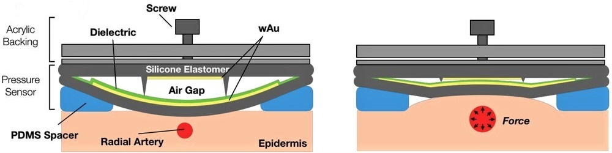
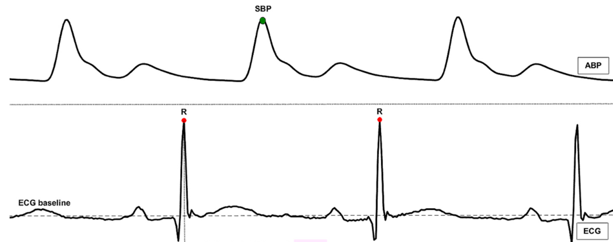

Device Details
BP Sensor
The BP sensor was designed to compress based on the pulse force of an artery. When the structure compresses, capactitance is generated as the gold lined silicone elastomer planes come into contact. Additionally, this sensor utilizes wrinkled structures technology to increase the surface area that comes into contact, thus increasing the sensitivity of the measurements obtained.
Pulse Transit Time
The addition of a single-lead wrist ECG to the BP sensor allows us to callibrate the BP sensor through measuring PTT: the time it takes for the pressure wave to propagate down the arterial tree. More specifically, PTT is the time difference between the R wave of the ECG and the BP wave measured at the wrist. This time measure correlates with pulse pressure; therefore, it can be used to self-calibrate the BP sensor and convert the measured units from pF to mmHg.
Foot Form Factor

We are working to design foot form factor for the blood pressure sensor to record signal from the dorsalis pedis artery. Since this alternative signal acquisition location has a lower degree of freedom, inferference from muscle contractions should be reduced compared to the wrist. In this design we utilize a movable platform as a pressure applicator, where the volume of a gel packet will be compressible to adjust the pressure applied to the sensor as seen fit.